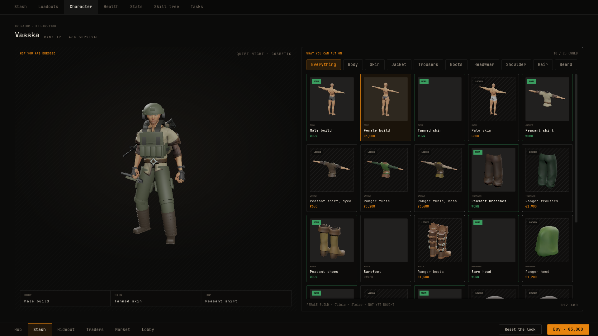
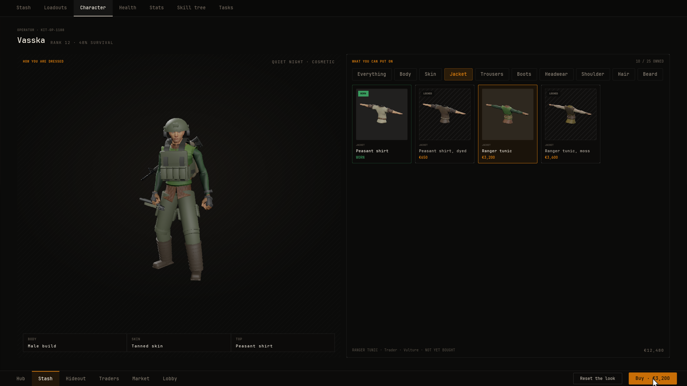

Character looks
Blackline draws item pictures, the player's figure and the wardrobe from data you fill in the Details panel. Items carry a Look and their type says how they are worn, and the figure is built from Wardrobe Piece Definition assets. This guide shows how each part works and how to dress the character in your level with the same outfit.
Where the pictures come from#
- Item tiles and the inspect window render the item's Look from its Item Definition.
- The figure on the doll, the character screen and the health screen is built from the wardrobe pieces the player wears, with their equipped items on top.
- Your level gets the same figure through Dress Character, so the character in the world wears what the menus show.
Every mesh, material and animation in a look is a soft reference. Nothing loads until something shows it.
An item's look#
Open an Item Definition and expand Look. It names what draws the item on tiles, in the inspect window and on the body while it is worn.
- Static Mesh
- The item's mesh. Most items use this one.
- Skeletal Mesh
- Used when Static Mesh is empty. Clothing such as trousers uses one so it can follow the body.
- Pickup Actor
- An actor shown instead of the mesh, such as a fully built rifle Blueprint. Its meshes are framed and lit like any other.
- Framing
- Overrides the automatic camera angle, zoom and offset. See Inspect.
Gear made of several pieces works best as one mesh with a material slot for each colour. The demo's gear and small items, such as the plate carrier, the helmet, the med kit and the fuel can, are each built that way.
Fitted attachments show on the item's picture everywhere it is drawn, on the tile, in the inspect window and on the gun slung on the character. Where each one sits is set on the weapon's attachment slot. See Placing weapon parts.
The body figure's look#
A body piece's Figure is the base every wardrobe piece is added to, so it has more fields than an item's look. You set it on a Wardrobe Piece Definition, as described in The wardrobe. A figure is a base plus a list of parts.
- Static Base / Skeletal Base / Actor Base
- The base. Set one. Actor Base spawns an actor instead of a mesh. A figure without a base draws nothing.
- Base Offset
- A transform applied to the base, to turn a model to face the camera or to scale it.
- Base Material
- Replaces the base's first material.
- Base Scalars
- Scalar parameters set on the base's material.
- Parts
- Extra meshes added to the base. See the part fields below.
- Character Preview Animation
- The animation the character preview loops. A still preview holds its first frame.
- Framing
- Overrides the automatic camera angle, zoom and offset.
When a preview turns to a part of the body, it looks for the standard bone names head, spine_03, upperarm_l, thigh_l and calf_l, or the matching part of the built-in mannequin of shapes. A skeleton with those names needs nothing more.
Each part in a figure has these fields:
- Part Name
- A name for the part. The live preview rebuilds only parts whose name or content changed.
- Static Mesh / Skeletal Mesh
- The part's mesh. A skeletal part on a skeletal base follows the base's pose.
- Socket
- The socket or bone to attach to. None attaches at the base's root.
- Offset
- A transform relative to the socket.
- Tint
- A colour applied through the engine's basic shape material. Leave it transparent to keep the mesh's own material.
- Material
- Replaces the part's first material, for a colourway of the same mesh.
- Equipment
- Marks worn or carried gear, as opposed to the body and clothing.
Worn gear on the body#
An equipped item shows its Look on the body in one of two ways. Both are set on the Item Definition under Type, and only the wearable types have the fields: Weapon, Armour, Gear and Container. Worn items are added on top of the wardrobe, and they come and go as the player equips and unequips.
- Rigid gear such as a helmet or a slung rifle: set Worn On to a bone or socket and Worn Offset to where it sits. The item's Look mesh hangs there. The demo's helmet sits on
Head, its rifles and knife onspine_03and its SMG onthigh_r. - Clothing such as trousers, boots or gloves: give the item a Look with only a Skeletal Mesh and leave Worn On as None. The mesh follows the body's pose. This works for Gear, Armour and Container items. A weapon always needs a bone. The demo's cargo trousers, boots and gloves use the CC0 Ranger legs, boots and arms meshes this way.
Any other item with Worn On left as None shows nothing on the body. Whatever is fitted to a weapon, such as a scope or a magazine, rides along with it when it is slung.
Worn clothing is drawn on top of the wardrobe and does not hide the wardrobe piece underneath. If both show, change the wardrobe outfit to suit, for example a piece in that slot that sits under the clothing, or none.
See Equipment for how worn gear behaves, and Placing weapon parts for getting offsets right.
The wardrobe#
The character screen shows the figure on one side and a filterable grid of wardrobe pieces on the other. Each piece is a Wardrobe Piece Definition data asset. Create them the same way as items, as Data Assets of class Wardrobe Piece Definition. The plugin finds them by itself.

- Display Name
- The piece's name.
- Category
- The wardrobe filter it is listed under, such as Jacket.
- Slot
- The wardrobe slot it is worn in, such as
Top,Legs,Feet,Head,HairorBody. Wearing it takes off whatever else is in that slot. These are names you choose, separate from the equip slots. - Focus Zone
- Where the camera frames while the piece is chosen: head, chest, arms, legs or feet. None frames the whole figure.
- Source
- Where it comes from, such as
Trader · Vulture. - Price
- Zero means the player owns it from the start.
- Worn At Start
- Worn by a new player. One per slot.
- Figure
- Set only on a body piece. This is the base figure every other piece is added to: a Skeletal Base, a Character Preview Animation and any always-on parts such as eyes. See The body figure's look.
- Looks
- How the piece looks on each body. Each entry has On Body (the body piece it fits, or None for any body), Parts, a Body Material that replaces the body's material such as a skin tone, and Body Scalars set on the body's material.
- Covers
- Slots this piece hides while worn, such as a hood covering
Hair.
How the figure is built#
- The worn body piece's Figure becomes the base. Without a body piece among the worn pieces, there is no wardrobe figure.
- Every other worn piece adds the parts from its look for that body. A piece in a slot another piece covers is skipped.
- A piece's Body Material replaces the body's material, and its Body Scalars are set on it.
- Every item the player has equipped is added on top. Worn items do not remove any wardrobe piece.
With no wardrobe pieces in the project at all, the figure is a simple mannequin of cylinders and a sphere, with no skeleton and no animation, and the character screen says there is nothing to wear yet.
Clothing that hides the skin#
Body Scalars let a piece tell the body's material which regions to hide, so skin does not poke through clothes. The demo's clothing pieces set HideTop, HideLegs or HideFeet to 1, together with the body's rest heights NeckZ, ArmX, WaistZ and AnkleZ in centimetres. If your body material has parameters like these, set them the same way.
Try on, buy and wear#
- Choosing any tile tries the piece on the figure, owned or not, and eases the camera to its Focus Zone. Nothing in your game changes.
- A piece with a price shows Buy with the price. If the player cannot afford it, the button reads Not enough cash and stays disabled, but the piece still shows on the figure.
- Buying spends the session's cash, wears the piece at once and keeps it owned, so the player can switch back to it later for free.
- An owned piece shows Wear it, or Already worn.
- Reset the look puts the starting outfit back on and keeps everything that was bought.

The example characters#
The example characters, their outfits, hairstyles and idle animation are CC0 Quaternius packs. They ship with the free Blackline Demo project, not with the plugin. The demo keeps the meshes under /Game/Examples/Character and its wardrobe pieces under /Game/Wardrobe. Without them, the plugin falls back to the simple mannequin. The demo opens on /Game/Maps/L_BlacklineDemo. Press Play, open the stash from the hub, and switch to the character screen from the stash's tabs.
The demo's pieces are a good model for your own:
- PDA_BodyMale
- A body piece in slot
Body, worn at start. Its Figure has the male mesh as Skeletal Base, a standing idle loop, eye and eyebrow parts, and a Base Offset yaw of -90 because the model faces +Y. - PDA_BodyFemale
- A second body piece in the same slot, priced 3000. Every clothing piece has one look per body, so changing the body swaps all the clothes with it.
- PDA_SkinLight
- A
Skinpiece whose looks only set Body Material, one per body. - PDA_RangerHood
- A
Headpiece with Covers set toHair.
The demo's rigid gear, such as the helmet, headset, plate carrier, rig, pack and watch, is a set of low-poly meshes made for the demo in Blender. They live in the demo project under /Game/Items/Gear/Meshes and are not part of the plugin. Its cargo trousers, boots and gloves use the CC0 male Ranger meshes from the example characters.
Dress your in-game character#
Dress Character on NVS View Look Library puts the same figure on a skeletal mesh component in your level: the wardrobe pieces and the worn gear. Skinned parts follow your own animation.
- Open your character Blueprint Go to the Event Graph.
- Add the call From Event BeginPlay, add Dress Character (category NVS | View | Look).
- Connect the body Drag the Mesh component into Body.
- Pick the context Leave Context Id empty for the local player.
- Choose the base Keep Apply Base ticked to take the wardrobe's body mesh, skin and clothing mask, or untick it to keep your own body and only add parts.
- Dress again on change Call Dress Character again after the outfit or the gear changes, for example from the Inventory component's On Inventory Changed. It removes what it added last time first.
#include "NVSViewLookLibrary.h"
void AMyCharacter::BeginPlay()
{
Super::BeginPlay();
UNVSViewLookLibrary::DressCharacter(this, GetMesh(), FGuid(), true);
}DressWithLook(Body, Look, bApplyBase) dresses a body with an FNVSViewLook your game already has. Everything either function adds carries the component tag DressedTag(), which is NVSViewDressed.
For the gun in the player's hands, use Show Held Item on the same library. It shows an inventory entry, with its scope and magazine, on a static mesh component.
Result#
Make a body piece with your character mesh and an idle, and one jacket piece with a look for that body, both worn at start. Press Play and open the character screen. The figure stands in your mesh wearing the jacket. Equip a helmet worn on Head and it appears on the head. Call Dress Character on your pawn's mesh and it wears the same outfit in the level.